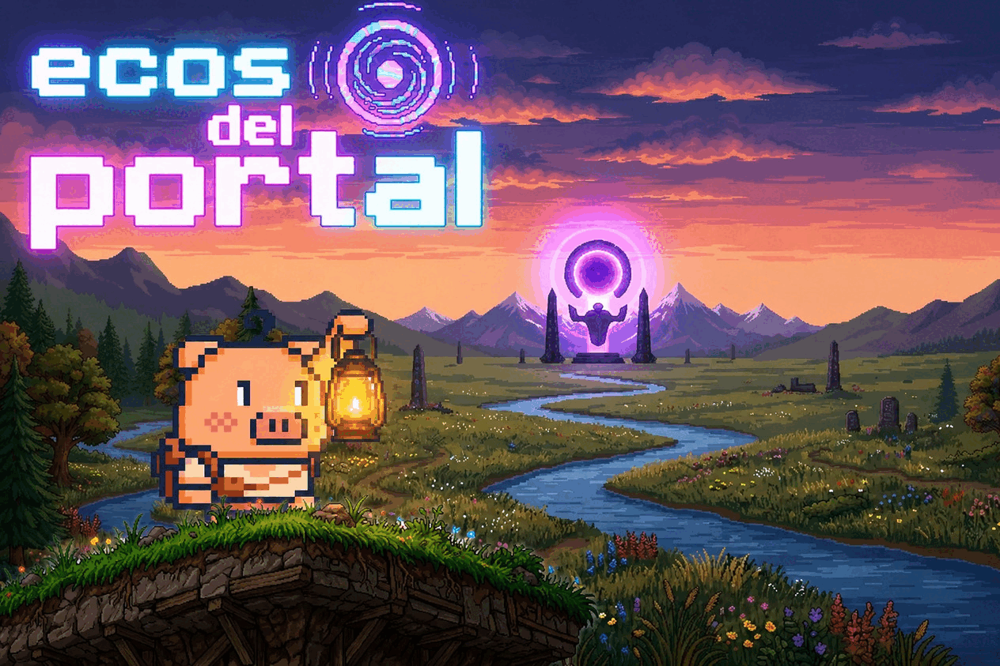
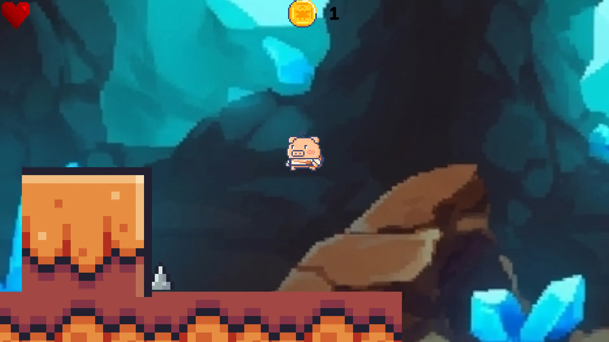
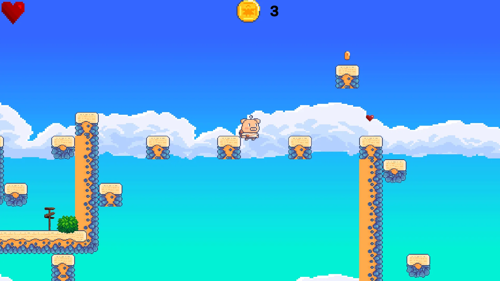
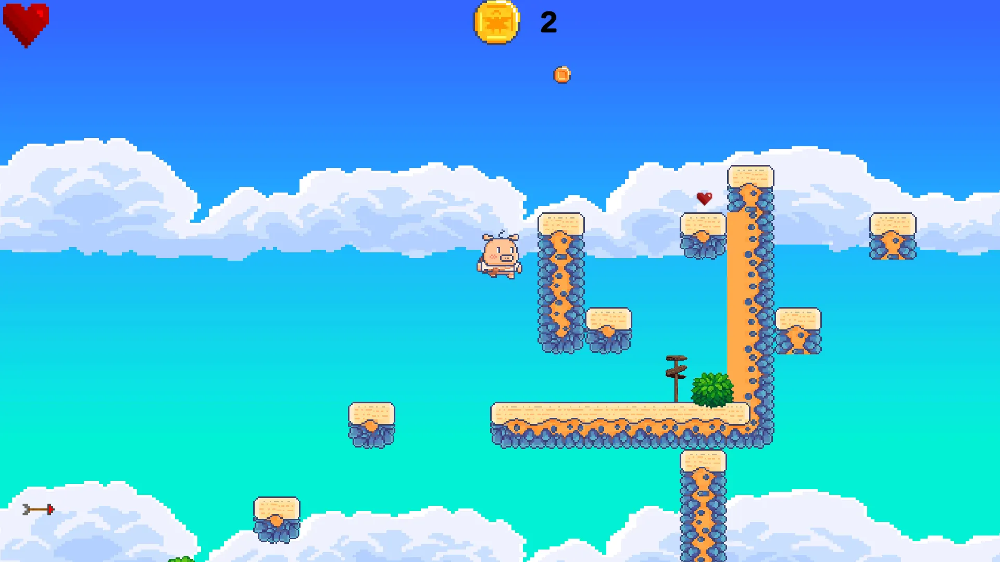
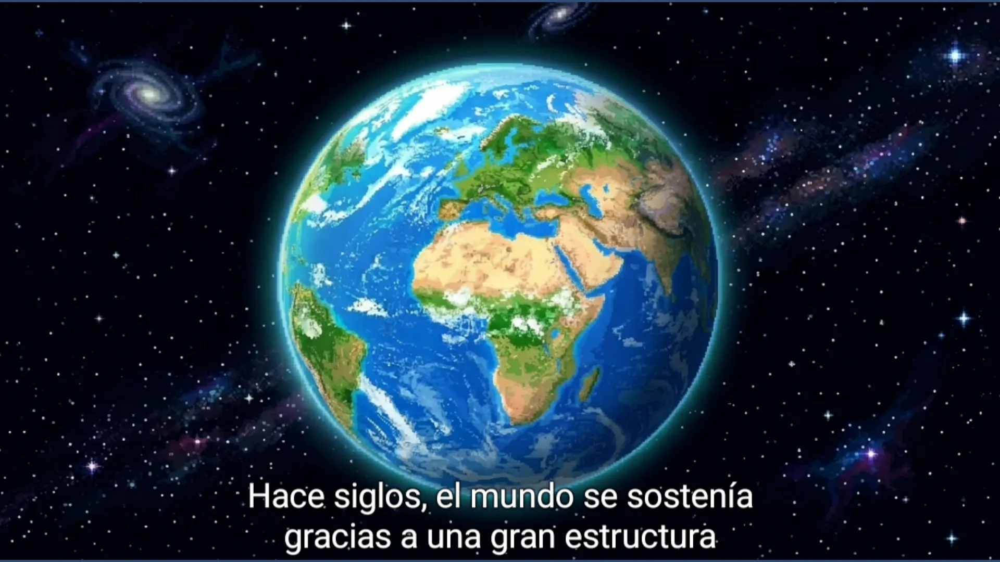

Restaura el equilibrio de Lúmina.
Hace siglos, se desarrolló el "Portal de Lúmina", una fuente de energía capaz de regular la estabilidad del suelo y la armonía con la naturaleza.
Una sobrecarga energética inesperada obligó a fraccionar el portal en fragmentos dispersos en templos para proteger al mundo.
Kael no es un guerrero; su fortaleza es la inteligencia y la observación para interactuar con la energía residual de los fragmentos.
Core Loop: Explorar > Identificar > Activar > Resolver > Obtener Fragmento.



